Who: Morgan Lee, 38 (born May 1988), an adult who likes maths puzzles and installed the app on an iPhone. Morgan belongs to cohort C6, the Quest player ("Let me play.") in docs/member-home-plan.md, and arrives as a signed-out guest. Morgan wants more puzzles than the free ones, with the scores kept, so Morgan takes the sign-up offer after the first question. This is the app replay of the web journey J01 (J01-adult-player.md).
Outcome: 1/1 journeys passed, 0 skipped, 24 of 24 steps verified. Morgan opened the app, picked grade 8 and answered question 1 of Quick 5. The offer said "Nice! That one is right." and Morgan signed up from it: an address, a name, May 1988 and the terms box, all in one sheet. It ended on a full-screen "Waiting for approval" (step 13). The platform admin approved Morgan in the web console. "A day later" Morgan reopened the app, which still showed the guest home, tapped "Sign in" and landed in "Morgan's space" (step 18). One tap on "10 in a row", a tile locked to guests, started a 10-question quest: after a countdown, question 1 was on screen (step 22). The end state was checked by closing and reopening the app (steps 23-24). Morgan stayed signed in, but "Continue G8Q10" started the quest again with a different first question.
Conversion figures (counted from the entry point, the app's first screen; the address and name are typed into the developer sign-in, which stands in for the provider step, see the Appendix):
Return to the quest's first question (steps 15-22)
5
4 (+3 scrolls)
1 typed (address)
1 (a ~3 s countdown)
0
Whole journey (steps 1-13, 15-22)
11
19
5 typed, 3 other
the approval (unbounded, unannounced) + ~3 s
0
The path is short: 19 taps from a stranger's first screen to a quest in their own space. Three of the five typed fields (the address twice, the name) belong to the developer sign-in and would be a provider tap in production. As on the web, the risk is the gap in the middle. The waiting screen does not say how long approval takes or how Morgan will hear. The app still opens on the unchanged guest home after the approval. Its most prominent button is "Contact us", and its "Back" drops the quest Morgan was playing.
For stickiness, the return works: the app kept Morgan signed in across a relaunch. The guest play carried over: grade 8 leads the board, today's Daily is grade 8, and the Quick 5 played as a guest is a favorite. All six grade-8 tiles are open, as the offer promised. Two things weaken it. The home offers the daily challenge twice under two names. And the "Continue" button that should bring Morgan back to a half-played quest starts it over instead.
The 3 screens Morgan would notice most:
Step 13, "Waiting for approval". Momentum stops dead. The screen is clean, one message rather than the web's two,
but it says nothing of who approves, how long it takes, or how Morgan will find out. The big button is "Contact us". "Back" goes to the guest home, not to question 2 of the quest Morgan was in.
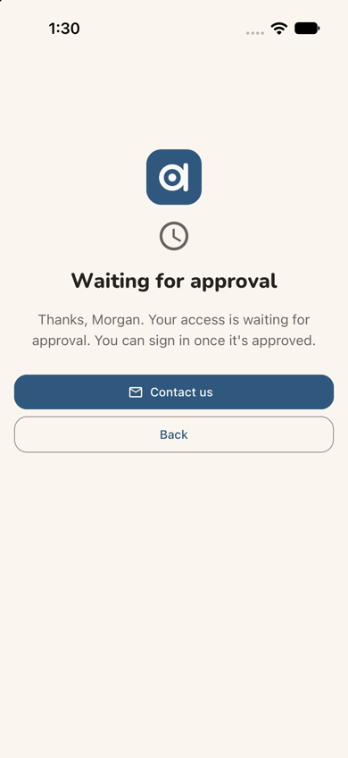
step 13
Step 19, what the guest play left behind. Grade 8 tiles, "Today's Daily · G8D" and the favorite "G8Q5" are all
there, so it feels like the same place. But the favorite is a code, the selected grade 8 is off the edge of the grade row, and the Daily repeats the "Today's 5" Next up card above it.
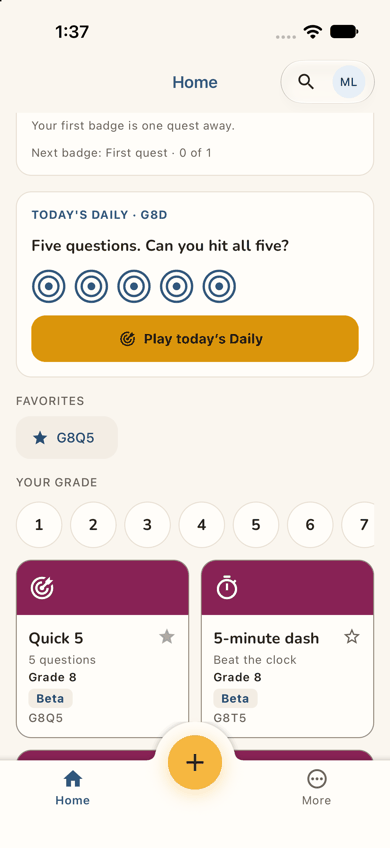
step 19
Step 24, "Continue G8Q10". After reopening the app, Morgan taps Continue and gets "Question 1 of 10" again, but
a different question from the one left on screen. The label promises a resume; the screen shows a fresh start.
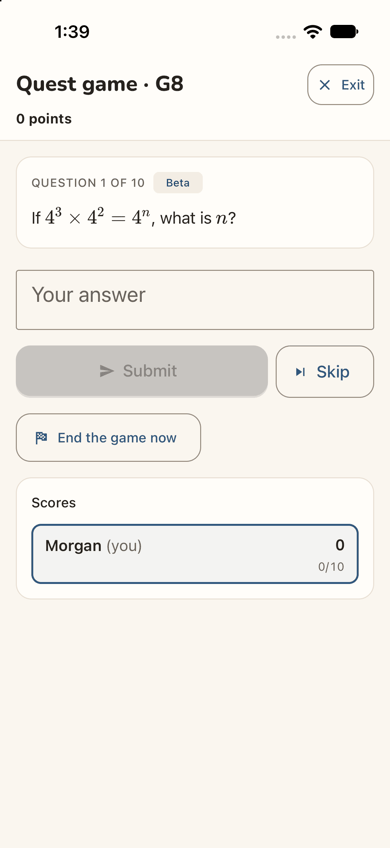
step 24
Contact sheet (all 24 phone steps):
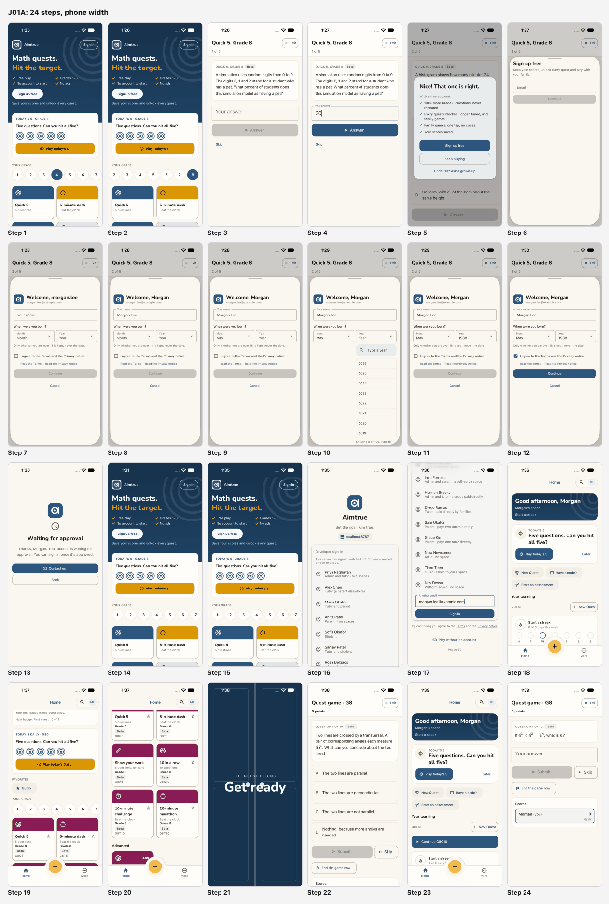
J01A contact sheet
Web and app. Compared with the web journey J01 (J01-adult-player.md, Jordan Avery), the app differs in eight ways:
The offer marks the answer. For "30" it said "Nice! That one is right." The web said "Good try" for "30%";
whether the app accepts "30%" was not checked. The app's offer puts "Sign up free" first and "Keep playing" second, with no X. The web has Keep playing first and an X.
Easier date picker. The year has a type-to-search list ("Showing 8 of 100. Type to narrow it down."), where the
web has a long select.
A full-screen wait. The wait fills the screen, without the web's leftover "Almost there" heading. "Back" lands
on the guest home and drops the quest; the web's X went back to question 2.
"Sign in" opens a sign-in screen. In this build it is a full-screen sign-in, not the "Sign up free" sheet of the
web's sev2. Production's provider screen was not seen.
A softer first line at home. The band reads "Start a streak" where the web led with "0 of 3 days played this
week". The streak card below still says "0 of 3 days this week".
The same duplicates, plus one. The daily twice and "New Quest" twice, as on the web. The app adds a yellow "+"
in the tab bar.
The same carry-over: grade 8 and a "G8Q5" favorite.
Quest name and resume. The quest's header reads "Quest game · G8" where the web phone said "Game". After a
relaunch, the app does not resume the quest the way the web's reload did.
The approval wait is a dead stop: no time frame, no notice, and Back drops the quest
Issue
After Continue (step 13) the app replaces everything with a full screen: the logo, a clock, "Waiting for approval" and "Thanks, Morgan. Your access is waiting for approval. You can sign in once it's approved." It does not say who approves, how long it usually takes, or whether Morgan will be told. The primary (filled) button is "Contact us"; the only other is "Back". Back (step 14) lands on the guest home, not on question 2 of the Quick 5 that Morgan was halfway through, and nothing there offers that quest again. When Morgan reopens the app "a day later" (step 15), the guest home is unchanged: "Sign up free" is still its main button, and nothing says the account exists or has been approved. Morgan has to think of "Sign in" alone.
Violation
cuj-contract, step 13 (expected: told that access waits, and what happens next; observed: told only that it waits), step 14 (expected: a way to keep playing; observed: the quest dropped) and step 15 (expected: some sign that the account is ready; observed: none); Nielsen #1 Visibility of system status; Nielsen #3 User control and freedom.
Severity
Classify: a workaround is needed. Morgan must remember, unprompted, to come back and sign in, with
no idea when that would work. For a curious adult with no stake yet this is the main conversion risk. The app makes it slightly worse than the web: the most prominent action is to write an email, and the way out loses the quest. It is not a 4, because signing in after the approval works (step 18).
Evidence
step 13
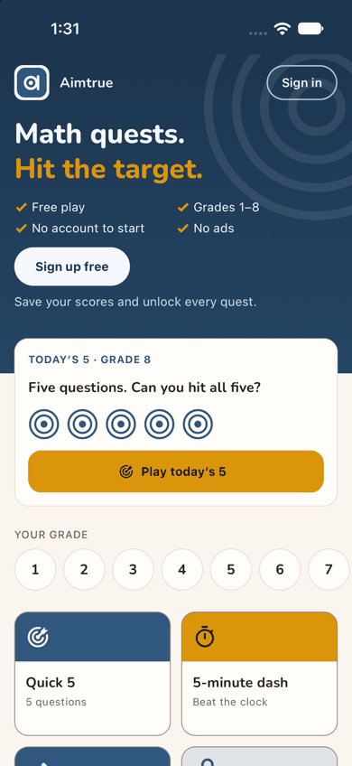
step 14step 15 Repro: sign-up access Post-approved. Fresh install; play a guest tile, answer question 1, then Sign up free on the offer. Fill the sign-up and tap Continue: "Waiting for approval". Tap Back: the guest home, quest gone. After the console approves, close and reopen the app: the guest home, unchanged.
Fix
Give the wait three lines and two buttons. The lines: "We check new accounts by hand, usually within a day." "We'll email you at morgan.lee@example.com when you're in." And who "we" are. The primary button, "Keep playing", goes back to the quest at question 2. Make "Contact us" a text link. Then make the email true: one plain "You're in" message on approval. The app could also check on its next launch and greet an approved account on the guest home: "Your account is ready: Sign in".
sev2
Continue G8Q10 starts the quest over instead of resuming it
Issue
Morgan started "10 in a row" and had question 1 on screen, a multiple-choice question about a transversal (step 22). Morgan closed the app and opened it again (step 23). It opened on Home, still signed in, not on the quest. Next up still offered "Today's 5". Under Quest a new full-width button read "Continue G8Q10". Tapping it (step 24) showed "Quest game · G8", "Question 1 of 10" and 0 points, but a different question: "If 4³ × 4² = 4ⁿ, what is n?", with a free-text box. The label promised a resume and the screen showed a fresh start. Reading the source explains it: Continue <label> in apps/mobile/src/features/play/play-home.tsx makes a new game from the last tile. Whether the step-22 game is still open somewhere was not inspected. On the web (J01 step 16) a reload kept the same game at the same question.
Violation
cuj-contract, steps 23-24 (success-criteria: expected the started quest to survive closing the app; observed: a new quest); Nielsen #4 Consistency and standards (the label "Continue" means resume); Nielsen #1 Visibility of system status.
Severity
Classify: an observable mismatch between a label and its result. At question 1 Morgan loses
nothing, but phones close apps all the time, and at question 7 of 10 the same tap would quietly discard a run. It is also a parity gap with the web.
Evidence
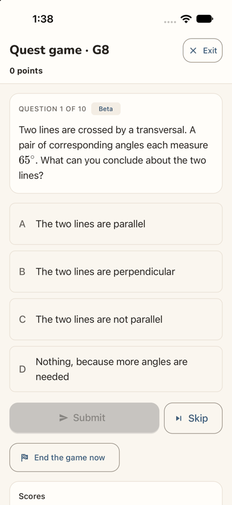
step 22
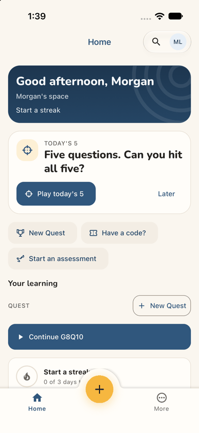
step 23step 24 Repro: as a member, start a 10-question tile, close the app at question 1, open it, tap "Continue G8Q10".
Fix
When the last quest is still running, make Continue open that game where it was, as the web's reload does, and put "Pick up where you left off" in Next up. When it has ended, name the button "Play 10 in a row again". Never call a new game "Continue".
sev2
The new home offers the same daily twice and New Quest twice
Issue
Morgan's first screen inside the space (step 18) leads with a Next up card, "TODAY'S 5 / Five questions. Can you hit all five?" and "Play today's 5". One scroll down (step 19) a second card reads "TODAY'S DAILY · G8D / Five questions. Can you hit all five?" with five rings and "Play today's Daily". Whether these are one challenge or two is left to Morgan. "New Quest" appears twice: a quick action and the "+ New Quest" button beside "Quest". A third large yellow "+" button sits in the tab bar with no label. The streak card says "0 of 3 days this week" and "Next badge: First quest · 0 of 1", minutes after Morgan played as a guest. The band's own line is the friendlier "Start a streak".
Violation
cuj-contract, steps 18-19 (expected: one clear first move in the new space; observed: two names for one action, three "new" buttons); Nielsen #4 Consistency and standards; Nielsen #8 Aesthetic and minimalist design.
Severity
Classify: an observable mismatch and real friction on the screen that most decides whether Morgan
comes back. A Quest player wants "let me play", and near-identical primary buttons slow the first tap.
Evidence
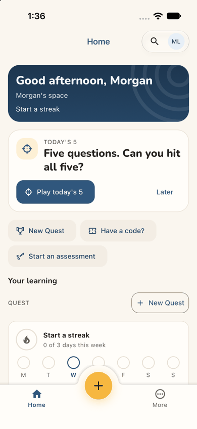
step 18step 19 Repro: as an approved new member who played a guest tile, sign in and land on Home; scroll once.
Fix
Use one name, "Today's 5" or "the Daily", everywhere. When Next up is the Daily, show only its rings in the Quest section. Keep one "New Quest", and label the tab bar's "+" (or drop it where it repeats New Quest). On a member's first day, count the day the device already played as a guest, or say "Play 3 days a week to start a streak" instead of "0 of 3".
sev1
Nothing on the guest page or the offer tells an adult it is for them
Issue
What Morgan reads before signing up is written for families. The guest home's ticks say "Grades 1–8" (step 1). Below the offer's "100+ more Grade 8 questions" it lists "Family games: one tap, no codes" and "Under 13? Ask a grown-up" (step 5). The sign-up sheet says "play with your family" (step 6). Nothing says adults are welcome or that anything lies past grade 8. Advanced tiles appear only inside the space (step 20). The guest page's lower part (its FAQ) was not scrolled in the app; on the web it adds "Is it safe for my child?".
Violation
cuj-contract, steps 1, 5 and 6 (expected: a page an adult puzzle-lover recognises as for them; observed: a family page); Nielsen #2 Match between system and the real world.
Severity
Classify: wording friction. Morgan stayed because play was one tap away, and the offer's first
benefit is about grade 8 questions. Graded 1 rather than the web's 2, because the screens seen in the app carry fewer of the child-only signals.
Evidence
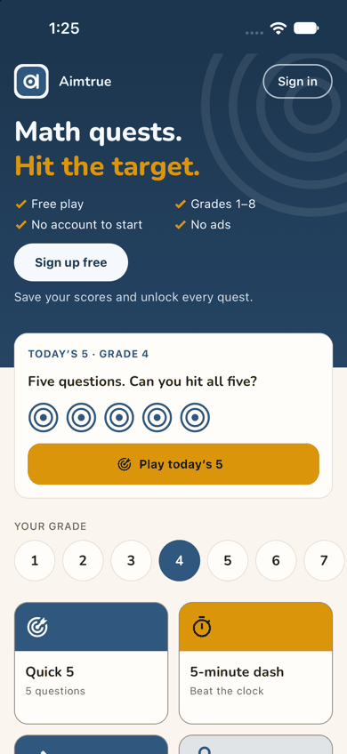
step 1
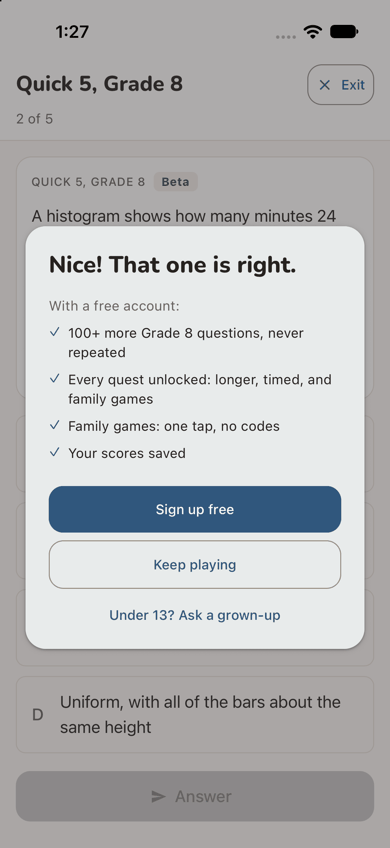
step 5
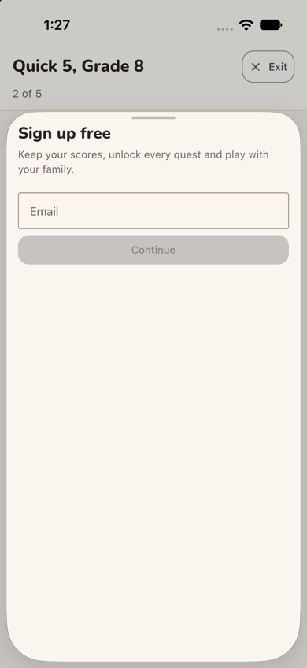
step 6 Repro: fresh install; read the guest home's hero, answer one question, read the offer and the sheet.
Fix
Add "and beyond, for every age" to the grades tick. Show Math 1 and the advanced levels on the guest board after grade 8. Write the sheet's line for whoever is playing ("Keep your scores and unlock every quest"), with the family line last.
sev1
The remembered grade 8 is off the edge of the grade row
Issue
On the phone the grade row shows 1-7; 8 is off the right edge with no cue that the row scrolls. Morgan swiped to find it (step 2). After Back (step 14), after reopening the app (step 15) and inside the space (step 19), the row is reset to 1-7. The selected 8 is hidden, while the cards above and below say Grade 8.
Violation
cuj-contract, steps 14, 15 and 19 (expected: the remembered grade visible; observed: off screen); Nielsen #6 Recognition rather than recall.
Severity
Classify: cosmetic, with a small discovery cost. The hardest grade, the one an adult looks for, is
the hidden one.
Evidence
step 15step 19 Repro: pick grade 8 on the guest home, then reopen the app; or sign in and scroll to "Your grade".
Fix
Scroll the selected grade into view on load. Fit eight circles at phone width, or show a fade and a chevron at the edge while more is hidden.
sev1
Codes where Morgan expects names: G8Q5, G8D and G8Q10
Issue
Several labels are internal codes. The one favorite the guest play left behind is a chip reading "★ G8Q5" (step 19), and Morgan has to match it to the Quick 5 tile. The Daily is "TODAY'S DAILY · G8D". Every tile carries its code (G8Q5, G8T5, G8A5...) beside an unexplained "Beta" pill (step 20). Morgan started "10 in a row" and the game is headed "Quest game · G8" (step 22). The way back to it reads "Continue G8Q10" (step 23). The name Morgan chose never appears again.
Violation
cuj-contract, steps 19-24 (expected: the things Morgan chose, named as chosen; observed: codes); Nielsen #2 Match between system and the real world.
Severity
Classify: cosmetic. Each code can be worked out, but each costs a moment of doubt, and the favorite
and Continue are the two pieces of continuity this journey is about.
Evidence
step 19
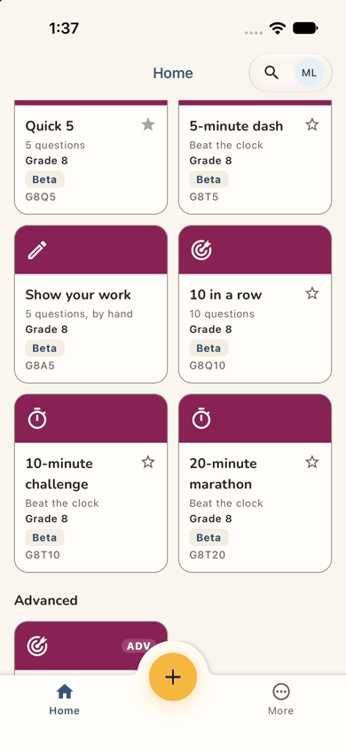
step 20step 23 Repro: as above; read Favorites, the Daily card, the tiles, the game header and Continue.
Fix
Label a favorite "Quick 5 · Grade 8". Say "Today's Daily · Grade 8". Head the game "10 in a row · Grade 8" and the button "Continue 10 in a row". Keep codes for the code box. Give "Beta" a tap-to-explain: "New question: tell us if something looks wrong."
Walkthrough
Step 1 — Open the app for the first time (landing) Expected: a screen that shows a newcomer what this is and lets them try it. Observed: match. The guest home: "Math quests. Hit the target.", ticks for Free play, Grades 1–8, No account to start and No ads, "Sign up free" above "Save your scores and unlock every quest.", "Sign in" top right. Then a "Today's 5 · Grade 4" card, "Your grade" 1-7 with 4 selected, and grade-4 tiles (Quick 5, 5-minute dash). Dark mode is readable; the hero stays navy.
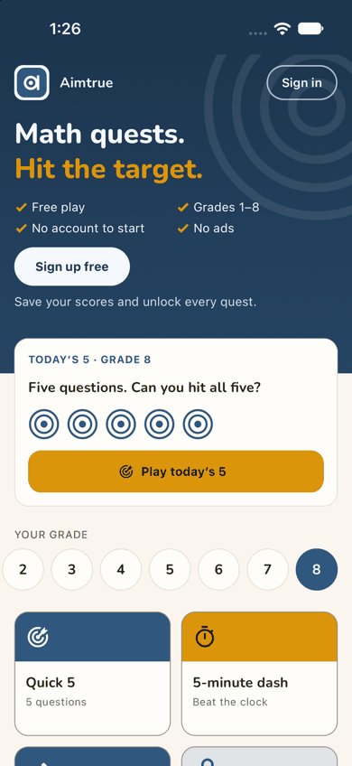
Step 2 — Swipe the grade row and pick 8 Expected: harder questions for an adult. Observed: match. The row slides to 2-8, 8 is selected, and Today's 5 switches to Grade 8.
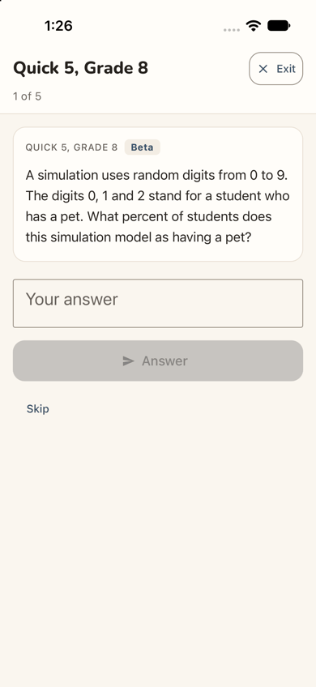
Step 3 — Tap "Quick 5" (Grade 8) Expected: a question straight away. Observed: match. A full screen "Quick 5, Grade 8", "1 of 5", an Exit button, and a card with a "Beta" pill: a simulation question (digits 0-9, with 0, 1 and 2 meaning "has a pet"; what percent?). A "Your answer" box, a disabled Answer and Skip.
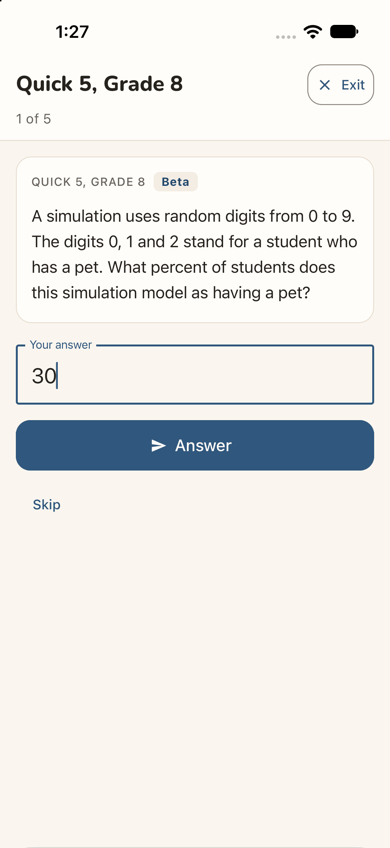
Step 4 — Tap the answer box and type 30 Expected: the answer accepted for sending. Observed: match. "30" in the box, Answer turns dark blue. (The simulator's hardware keyboard was on, so the on-screen keyboard and its type were not seen.)Step 5 — Tap Answer: the sign-up offer (landing) Expected: told whether 30 is right, then question 2. Observed: match. The quest moves to "2 of 5" and a dialog opens over it: "Nice! That one is right.", "With a free account:" and four ticks: 100+ more Grade 8 questions, never repeated; Every quest unlocked: longer, timed, and family games; Family games: one tap, no codes; Your scores saved. Then "Sign up free" (filled), "Keep playing" and "Under 13? Ask a grown-up". No close X. Dark mode is readable.Step 6 — Tap "Sign up free" Expected: a sign-up choice. Observed: a bottom sheet over the quest: "Sign up free / Keep your scores, unlock every quest and play with your family." with an Email field and a disabled Continue. This is the developer sign-up (the local server runs with sign-in off); production shows provider buttons here. The sheet is full height, mostly empty.
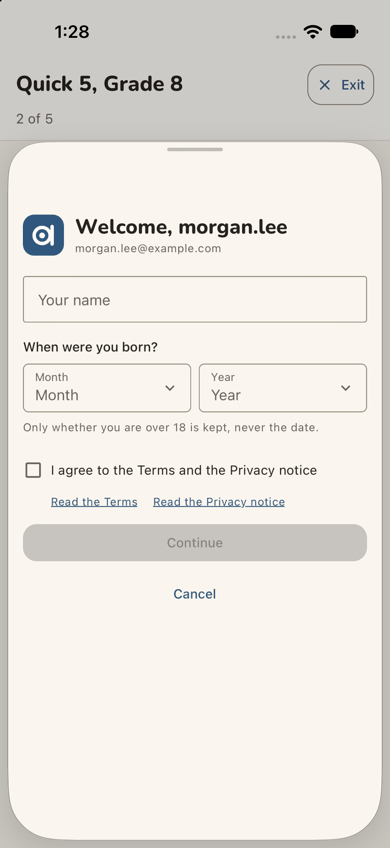
Step 7 — Type the address and tap Continue Expected: the next sign-up step. Observed: match. In the same sheet: "Welcome, morgan.lee" with the address, "Your name", "When were you born?" (Month, Year), "Only whether you are over 18 is kept, never the date.", the terms box, "Read the Terms" and "Read the Privacy notice" links, a disabled Continue and Cancel.
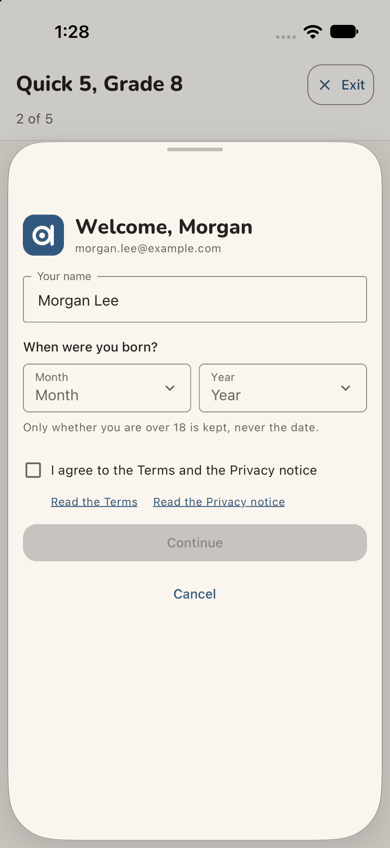
Step 8 — Type the name "Morgan Lee" Expected: the name taken. Observed: match. The greeting becomes "Welcome, Morgan".Step 9 — Open Month and pick May Expected: the month set. Observed: match. Month shows "May".
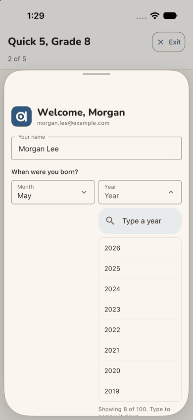
Step 10 — Open Year Expected: a way to reach 1988. Observed: match. A list opens under Year with a "Type a year" search box, 2026 to 2019 showing, and "Showing 8 of 100. Type to narrow it down."
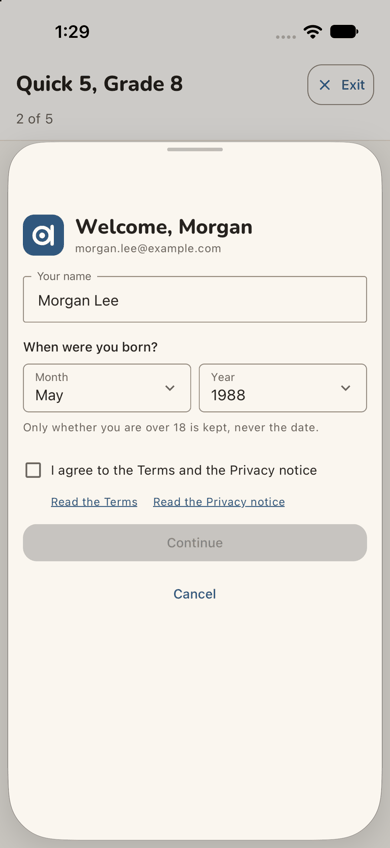
Step 11 — Type 1988 and pick it Expected: the year set. Observed: match. Year shows "1988"; Continue stays disabled until the box is ticked.
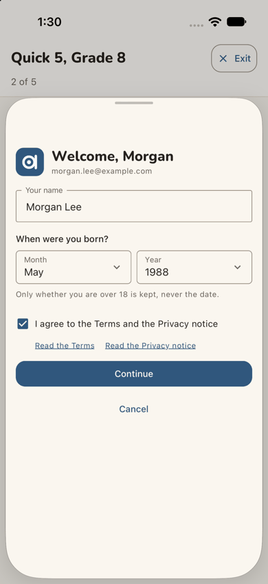
Step 12 — Tick "I agree to the Terms and the Privacy notice" Expected: Continue enabled. Observed: match. The box is ticked and Continue turns dark blue.Step 13 — Tap Continue: "Waiting for approval" (landing) Expected (sign-up access Post-approved): told that access waits for approval, and what happens next. Observed: told that it waits, within a second, on a full screen: the logo, a clock, "Waiting for approval", "Thanks, Morgan. Your access is waiting for approval. You can sign in once it's approved.", a filled "Contact us" and an outlined "Back". The quest is no longer in view. Dark mode is readable.Step 14 — Tap Back Expected: back to the quest, to keep playing while waiting. Observed: the guest home, with "Today's 5 · Grade 8" remembered but the grade row back at 1-7. Nothing offers the Quick 5 that was at question 2, and nothing mentions the account.Step 15 — A day later: open the app again (landing) Expected: the app, perhaps with a sign that the account is ready. Observed: the guest home exactly as on step 14: Today's 5 · Grade 8, the grade row at 1-7, "Sign up free" as the main button, "Sign in" top right. Nothing about the account or the approval. (Approval was given in the web console between the two stages.)
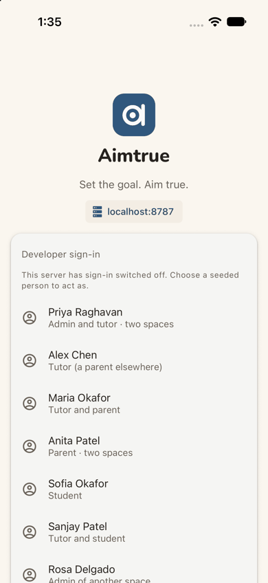
Step 16 — Tap "Sign in" Expected: a sign-in step. Observed: a full-screen sign-in: the logo, "Aimtrue", "Set the goal. Aim true.", a "localhost:8787" chip and "Developer sign-in: This server has sign-in switched off. Choose a seeded person to act as." with a list of seeded people. This is the development build's screen; production's provider buttons were not seen.
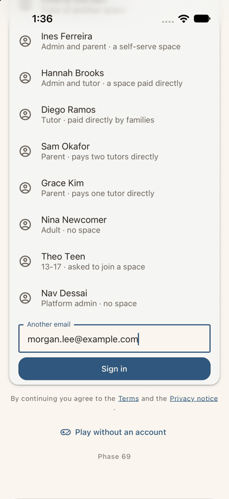
Step 17 — Scroll to "Another email" and type the address Expected: a place for Morgan's address. Observed: match. Under the list, "Another email" with the address typed, a "Sign in" button, "By continuing you agree to the Terms and the Privacy notice", "Play without an account" and "Phase 69".Step 18 — Tap Sign in: home in "Morgan's space" (landing) Expected: into the product. Observed: match, in about a second with nothing asked again. Home of "Morgan's space": the band "Good afternoon, Morgan / Morgan's space / Start a streak". Next up "TODAY'S 5 / Five questions. Can you hit all five?" with "Play today's 5" and "Later". Quick actions New Quest, Have a code? and Start an assessment. "Your learning" with QUEST and "+ New Quest", and a "Start a streak / 0 of 3 days this week" card with Monday-Sunday dots. The tab bar has Home, a yellow "+" and More. No welcome, no "you're approved", no tour. Dark mode is readable.Step 19 — Scroll down: what the guest play left behind Expected: some continuity with yesterday. Observed: match. The streak card ends "Your first badge is one quest away." and "Next badge: First quest · 0 of 1". Then "TODAY'S DAILY · G8D", five rings and "Play today's Daily". Under Favorites, one chip: "★ G8Q5", the tile played as a guest. "Your grade" shows 1-7, and the selected 8 is off the edge. Grade-8 tiles follow in the grade's magenta: Quick 5 (its star filled) and 5-minute dash, each with "Grade 8", "Beta" and its code.Step 20 — Scroll on to the grade-8 tiles Expected: the tiles the offer said would unlock. Observed: match. Six grade-8 tiles, none locked: Quick 5, 5-minute dash, Show your work, 10 in a row, 10-minute challenge, 20-minute marathon, each with an outline star to favorite. "Advanced" begins below with an "ADV" tile.
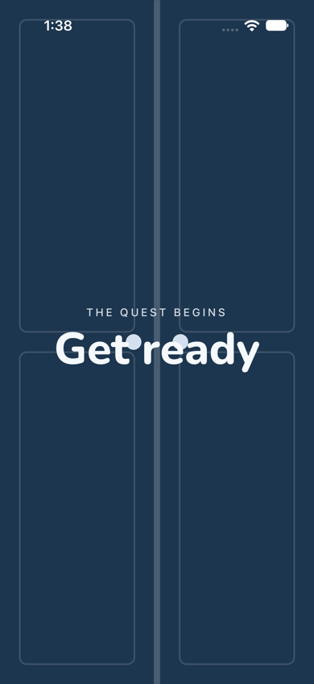
Step 21 — Tap "10 in a row" (locked as a guest): the countdown Expected: the quest starts. Observed: match. A full-screen navy countdown with two doors, "THE QUEST BEGINS / Get ready". In this frame, captured mid-animation, two pale dots sit over the letters of "Get ready". It lasted about 3 seconds.Step 22 — Question 1 on screen (landing) Expected: the quest's first question. Observed: match. Header "Quest game · G8", "0 points" and Exit. "QUESTION 1 OF 10" with "Beta": two lines crossed by a transversal, corresponding angles of 65°, choices A-D. A disabled Submit, Skip, "End the game now", and a "Scores" card below. Dark mode is readable. The journey's end: the quest has started.Step 23 — Close the app and open it again (end-state check) Expected: the started quest survives. Observed: partly. Morgan is still signed in, with no sign-in asked. The app opens on Home, not the quest. Next up still offers "Today's 5". A new full-width "▶ Continue G8Q10" button sits under Quest.Step 24 — Tap "Continue G8Q10" (end-state check) Expected: back at question 1 of the same quest. Observed: "Quest game · G8", 0 points, "QUESTION 1 OF 10", but a different question ("If 4³ × 4² = 4ⁿ, what is n?", typed answer) from step 22's. The Scores card: "Morgan (you) 0, 0/10".
1 / 24
Appendix
Mode: live. The iOS app, development build com.aimtrue.app.dev, on the iPhone 17 simulator (iOS 27.0), loading
its bundle from Metro, against the local Worker at http://localhost:8787 (the run's data and settings, sign-in off). Driven with Maestro, one small flow per step (apps/mobile/.maestro/journeys/j01a-*.yaml), each screen captured with simctl and resampled to 390 px wide. Dark mode at the landing steps (1, 5, 13, 15, 18, 22). Two stages on one device with no state cleared between them: steps 1-14, then the platform admin's approval, then steps 15-24 after a relaunch.
Frameworks applied: cuj-contract (every step against its expected result); task-completion (the journey ran to
its defined end, a quest started in Morgan's own space, step 22); success-criteria (the end state checked again after closing and reopening the app, steps 23-24).
CUJ manifest: J01A, 24 steps, all verified: steps 1-22 are the journey and 23-24 the end-state check. Step 14
(Back from the wait) is a detour Morgan tried, outside the shortest path.
Coverage / not inspected:
The production sign-in and sign-up screens (Google, Microsoft, Facebook buttons): the local server ran with
sign-in off, so the app showed its developer forms (steps 6-8, 16-17). Their wording ("Welcome, morgan.lee", the seeded list, "Phase 69") is not what a stranger sees and was not judged.
The Terms and Privacy notice: not opened.
"Contact us" on the waiting screen: not tapped; its destination was not seen.
The on-screen keyboard (the simulator's hardware keyboard was on), so the answer box's keyboard type and hint.
Whether the app accepts "30%" for question 1 (the web's "Good try"); only "30" was tried.
Whether Morgan was told of the approval outside the app (an email); no mailbox was available.
Whether the game started at step 22 is still open after step 24, and what happens to it.
The guest home below the tiles (Advanced, Play together, the FAQ), the yellow "+" in the tab bar, More, the
account menu, "Make this my home", favorites' stars, the Daily, and the rest of the quest past question 1.
VoiceOver, Dynamic Type and Android.
Access: the app's developer sign-in (the local server ran with sign-in off, because the native Google step cannot
be driven on the simulator); the development build; the approval and any space decision were made in the web console and are not part of the journey.
Preconditions made outside the app: none by this journey. The run's platform settings (sign-up access
Post-approved, guest play and the Daily on, the default tiles) were set before the journeys, as docs/userjourney/README.md "The run" records. Between the two stages the platform admin approved Morgan in the web console on :8787 (Sign-up access, Waiting for approval, Approve).